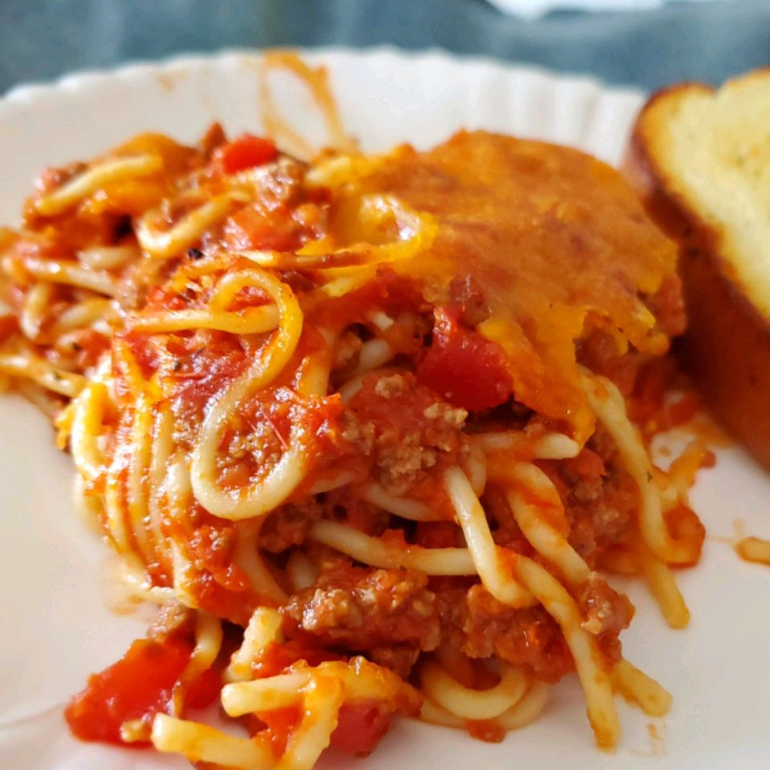

Spaghetti
Description
the recipe to cook the best italian spaghetti of your life
Ingredients:
¾ pound lean ground beef
1 (16 ounce) jar spaghetti sauce
1 pound spaghetti
1 cup shredded mild Cheddar cheese

Steps:
Preheat the oven to 350 degrees F (175 degrees C).
Cook beef in a large skillet over medium-high heat until crumbly and brown, 8 to 10 minutes. Stir spaghetti sauce into beef. Reduce heat and simmer.
Meanwhile, bring a large pot of lightly salted water to a boil. Stir in spaghetti; cook until al dente, 8 to 10 minutes. Drain.
Add spaghetti to meat mixture; mix well. Transfer to a 9x13-inch dish. Top with Cheddar cheese.
Bake in the preheated oven until heated through and cheese is bubbly, about 30 minutes.
That's it!